o?oeasy.txtABCD 四个字符:h i_ctrl-v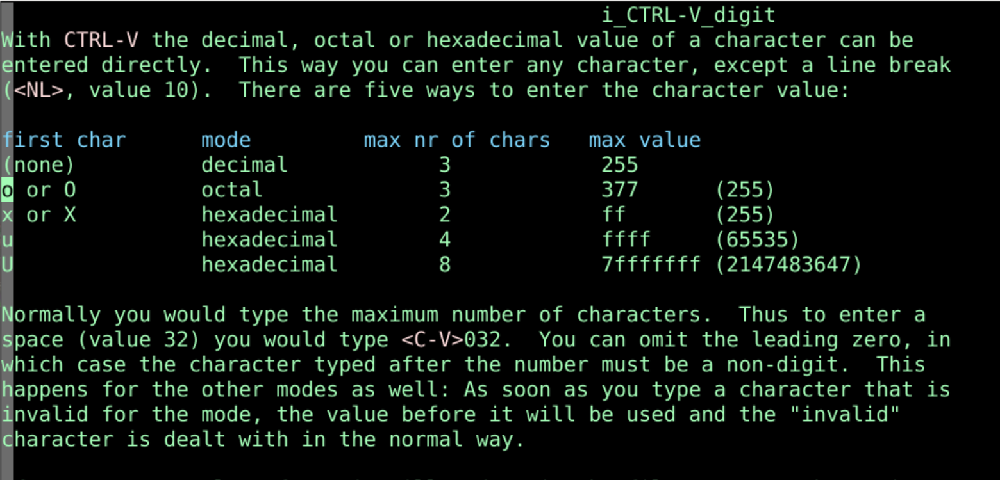
:.!xxd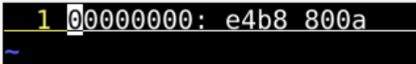
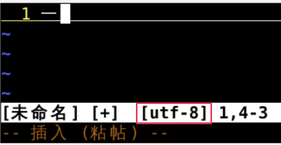
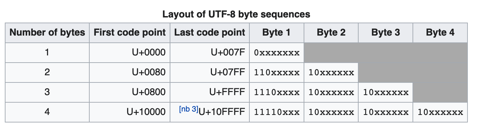
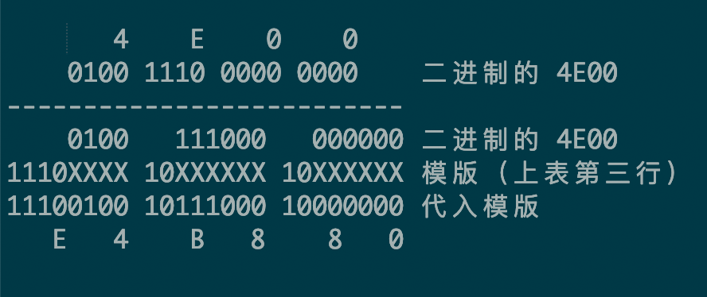
e4b880对应着一0a 对应着 <LF>:language可以查看当前编码格式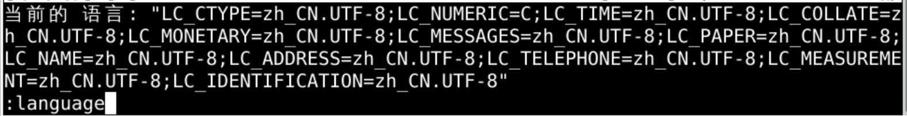
:set encoding=unicode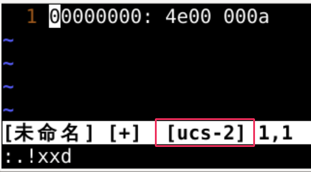
:set encoding=latin1latin1来解释e4b880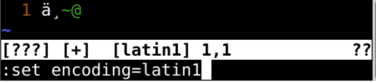
:set encoding=gb2312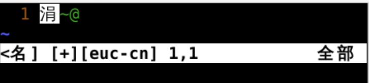
:set encoding=utf-8一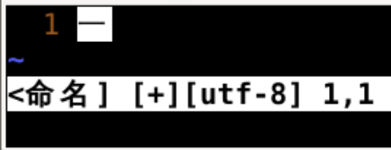
:set encoding=gb2312gb2312的编码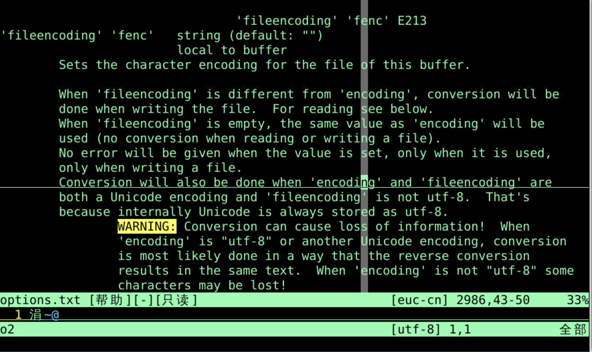
fenc其实就是fileencodingfileencoding 和 coding 有什么不同呢？encodingfileencoding 是保存文件时utf-8写下了一e4b880:set encoding=gb2312 e4b880理解为涓~并显示在屏幕上:set fileencoding=gb2312 涓~在硬盘上写成e4b880vi oeasy.txte4b880理解为一并显示在屏幕上一到硬盘:set encoding=gb2312:set fileencoding=gb2312 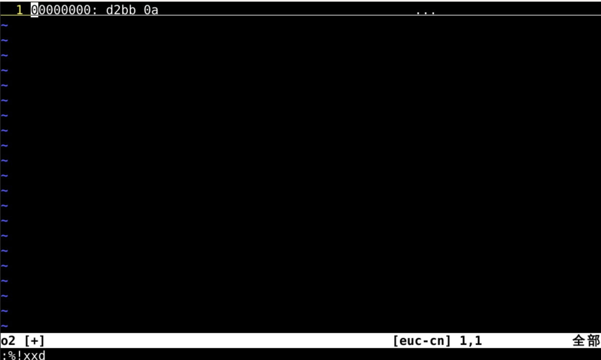
:%!xxdd2bb在gb2312格式下被理解为一:%!xxd -r:w! o2z.txtgb2312编码一，也就是d2bbvi o2z.txthutf-8解码gb2312编码的文件:%!xxdd2bb%!xxd -r:set encoding=gb2312gb2312解码d2bb为一 :set encoding=utf-8:set fileencoding=utf-8unicode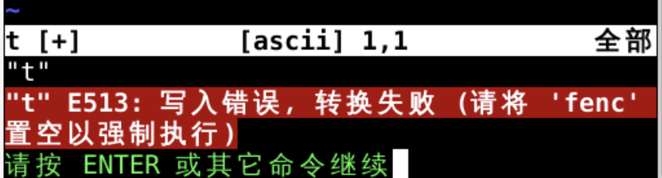
一无法保存:set fileencoding=:set fileencoding?:set encoding?encoding是ucs-2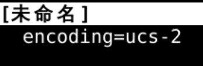
help encoding-name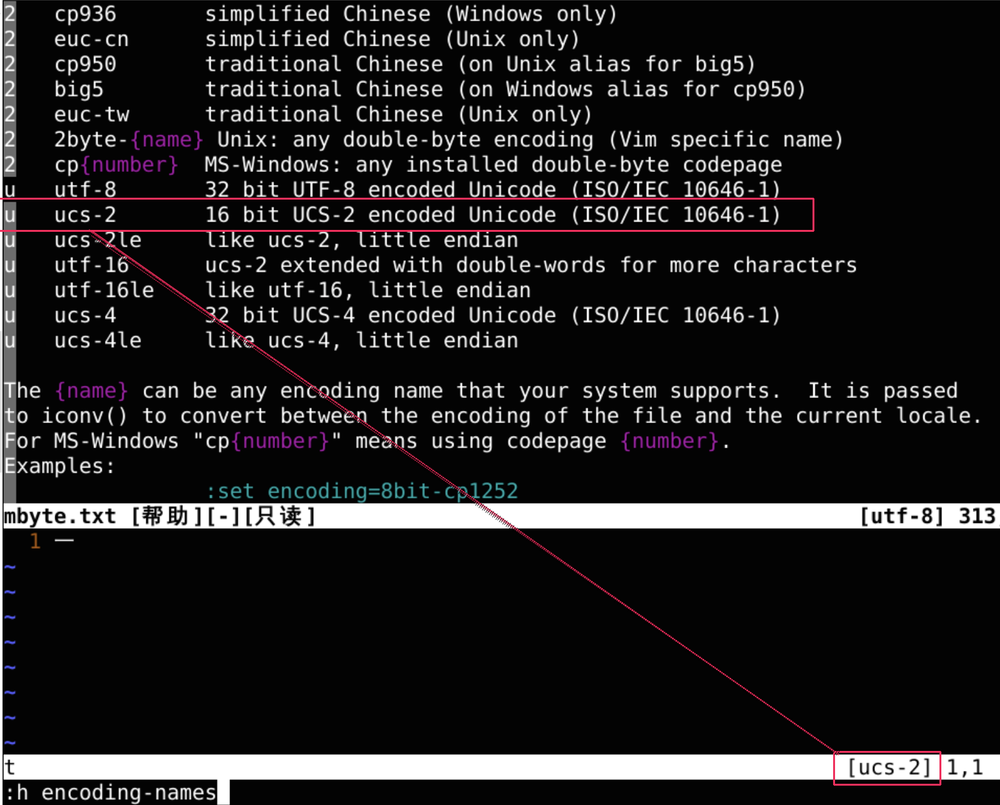
:set fileencoding=utf-8:set fileencoding=gb2312:set encoding=utf-8或者:set encoding=gb2312